La sezione come rivelazione strutturale
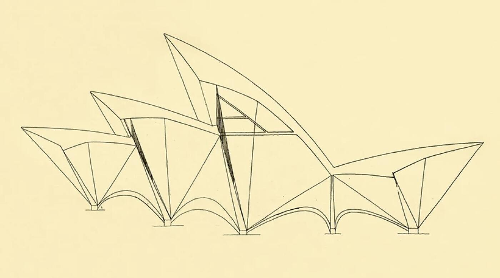

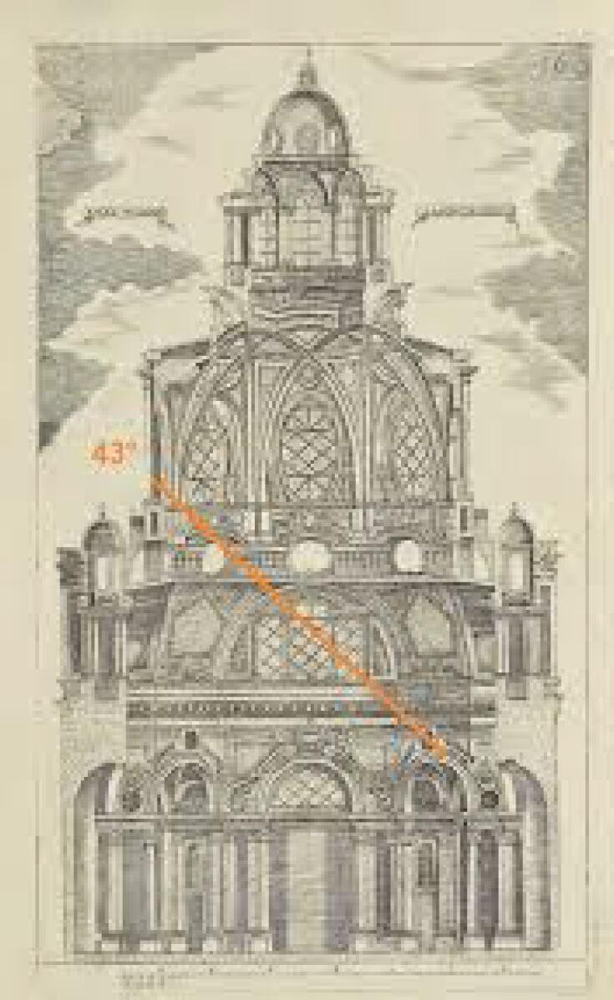
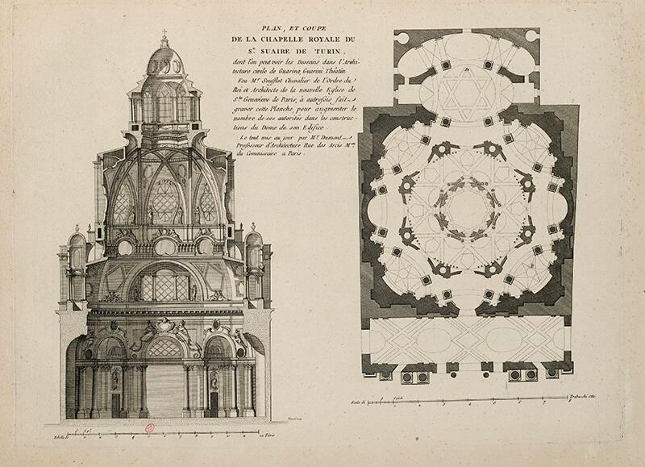
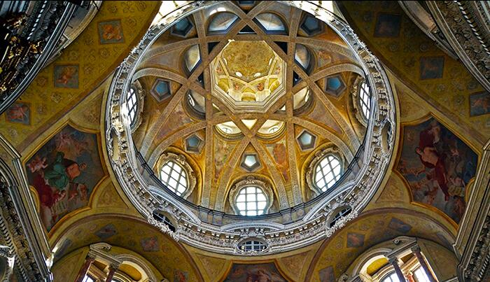
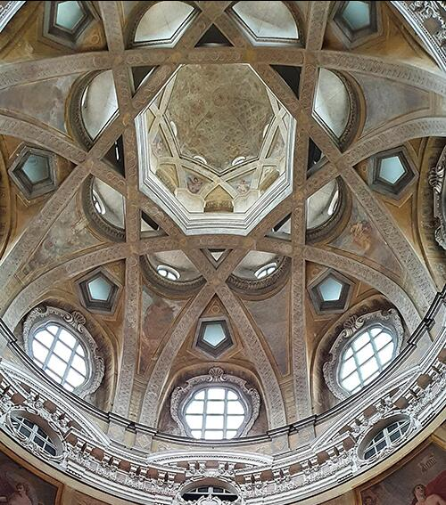
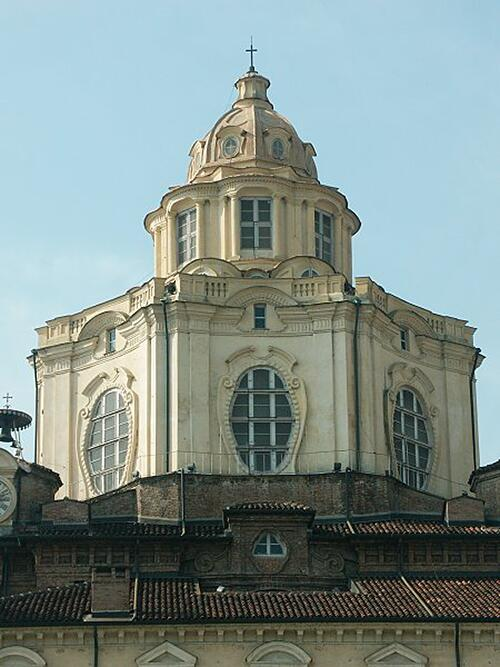
A San Lorenzo la sezione disvela l’ordine profondo dell’edificio: una macchina ascensionale in cui il passaggio da quadrato–ottagono–stella–oculo guida lo sguardo verso la lanterna. Non c’è una calotta unica, ma gusci sovrapposti e alleggeriti, cuciti da archi rampanti che intrecciandosi generano la trama stellare. La statica diventa figura; la figura, luce. Dai tagli verticali e dalle finestre occultate la luminosità sale per gradi, rimbalzando sulle superfici inclinate fino a smaterializzare la massa in prossimità della cupola.
La verticalità non è effetto scenografico, ma risultato di un sistema di tensioni geometriche che si intensifica salendo: il diametro si riduce, gli elementi si infittiscono, la luce si concentra nell’oculo. La sezione chiarisce anche il comportamento strutturale: gli archi in muratura ridistribuiscono le spinte e sostituiscono la tradizionale armatura lignea, consentendo una costruzione leggera e autoportante per l’epoca.
Dal punto di vista percettivo, la progressione dal basamento più ombroso alla lanterna luminosa organizza un percorso di rarefazione: la materia perde peso, lo spazio guadagna intensità. È un modello didattico esemplare su cosa significhi “giudicare in sezione”: comprendere come luce, forma e struttura coincidano e come solo il taglio verticale riesca a restituire il campo che la pianta non mostra—quello in cui l’architettura diventa tempo, profondità e necessità.

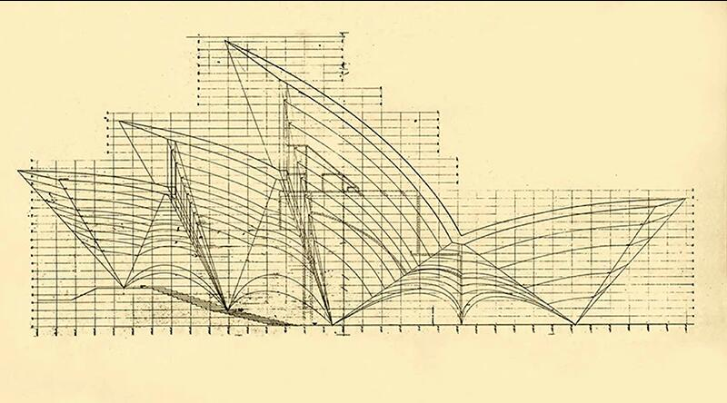
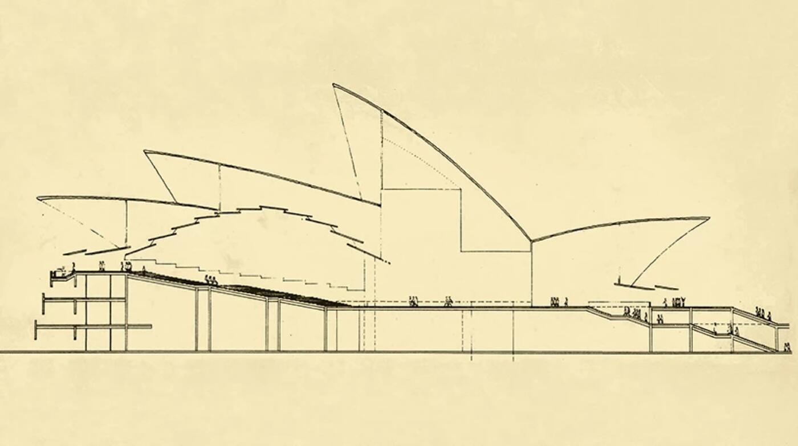
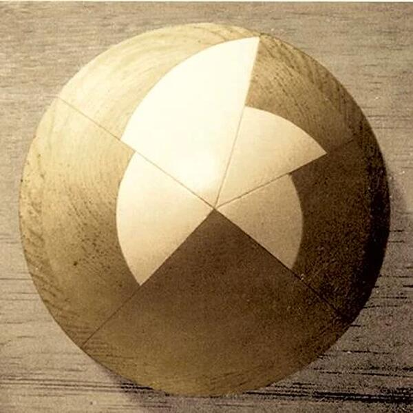
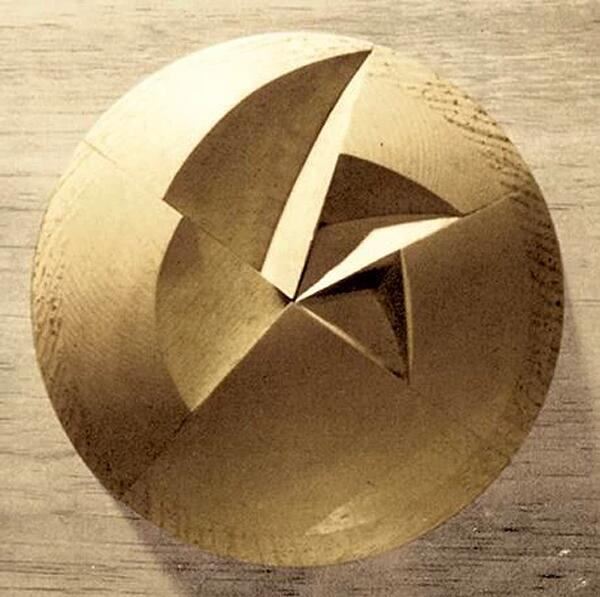
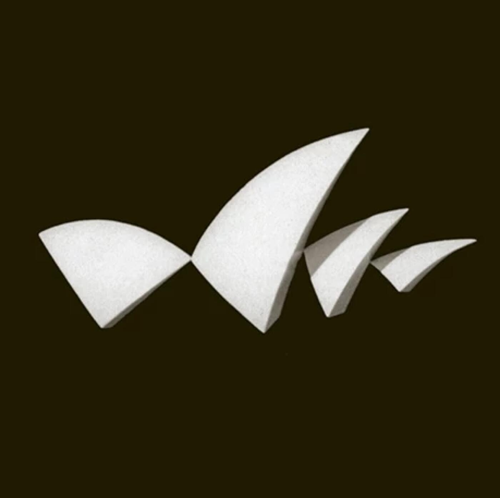
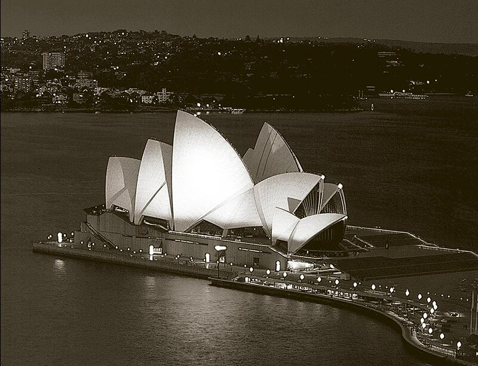
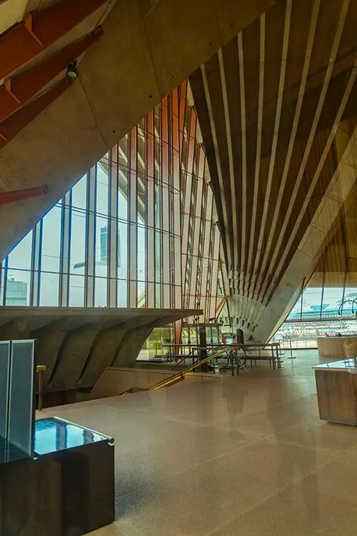
Alla Sydney Opera House la sezione non verifica: genera. Utzon individua una sola sfera ideale e ne ricava, per tagli successivi, tutte le superfici delle calotte. Da questa matrice unica discendono dimensioni, raggi, moduli e dettagli costruttivi: la forma non è un’immagine esterna ma l’esito di una legge geometrica che tiene insieme architettura, struttura e processo.
La sezione rende leggibile questa logica. Ogni vela è un arco di sfera composto da costole prefabbricate in calcestruzzo, montate in cantiere e post-tese: la regola sferica consente stampi standard, serialità, controllo delle tolleranze. La geometria diventa economia di cantiere e coerenza sintattica: cambiano scala e orientamento delle calotte, ma la famiglia formale resta stabile perché tutte “appartengono” alla stessa sfera.
Dal punto di vista percettivo, la sezione mostra anche il comportamento della luce: superfici inclinate e tagli netti riflettono il cielo e proiettano lo spazio verso l’esterno; all’interno, il diaframma strutturale separa l’involucro dalle sale, permettendo di governare acustica e impianti senza tradire la chiarezza dell’involucro.
Per la didattica, il valore è esemplare: la sezione qui è principio generativo e non solo controllo finale. In un unico disegno si condensano regola geometrica, statica, prefabbricazione, percezione luminosa. È la dimostrazione che l’identità di un’opera può nascere da una matrice semplice e necessaria, capace di produrre variazioni senza perdere coerenza.

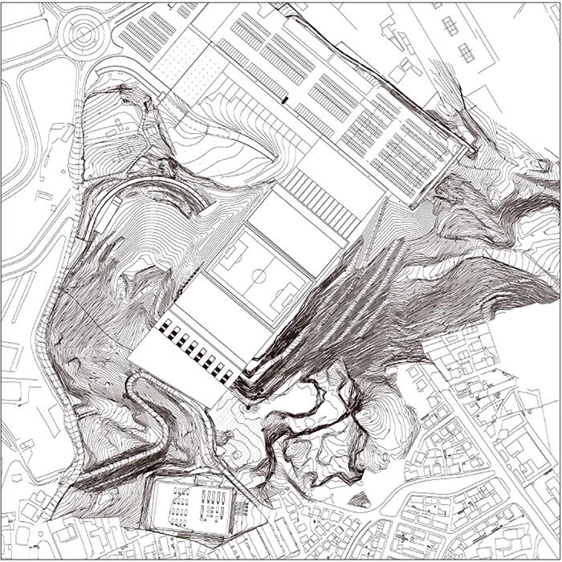
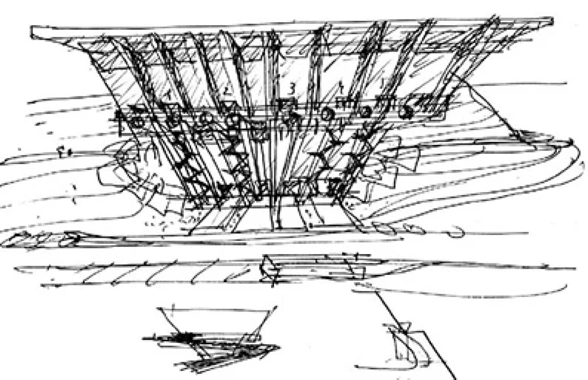
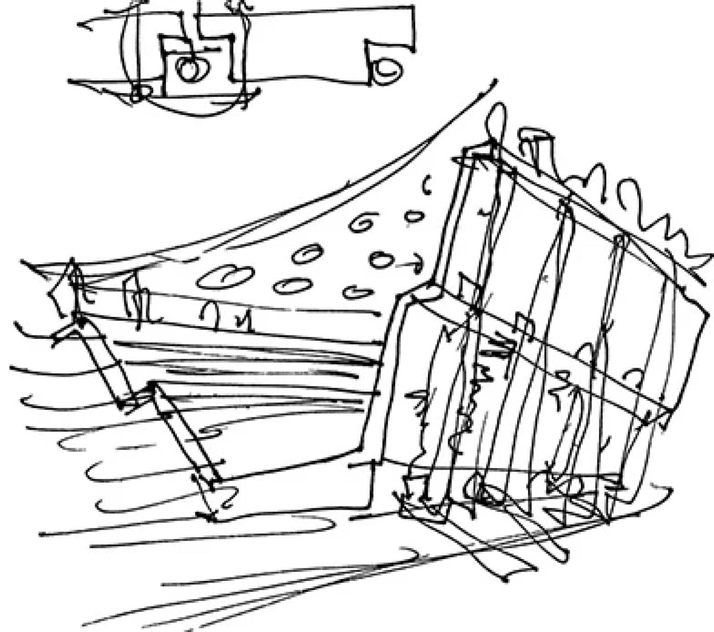
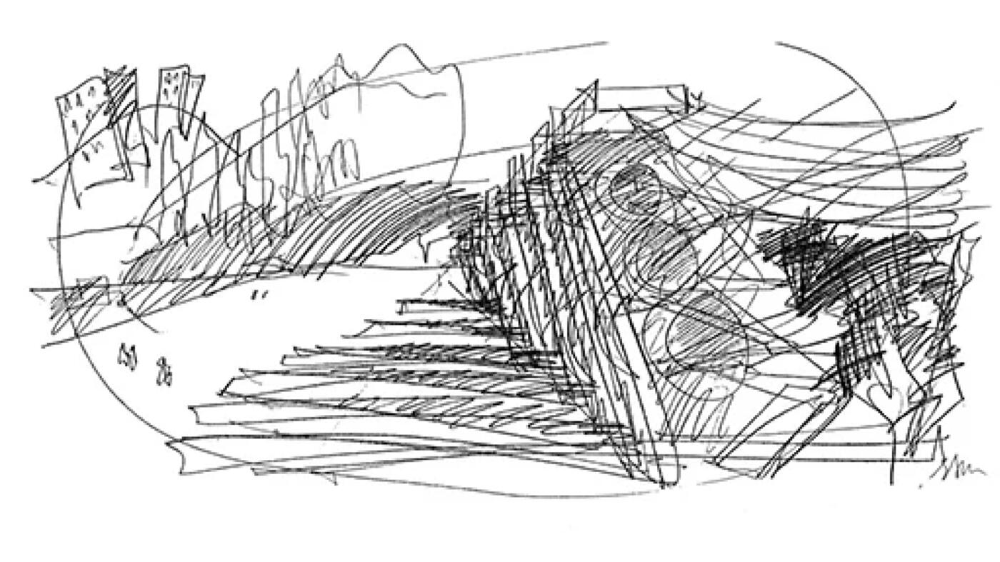
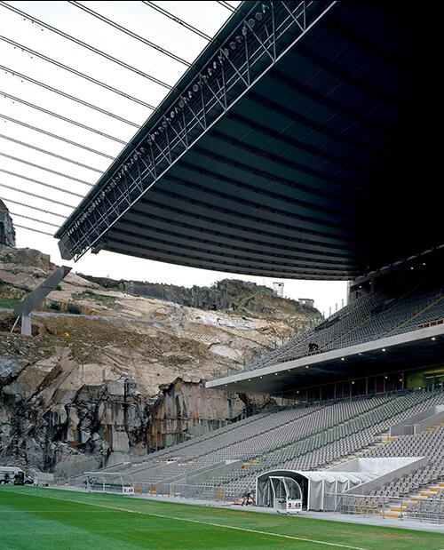
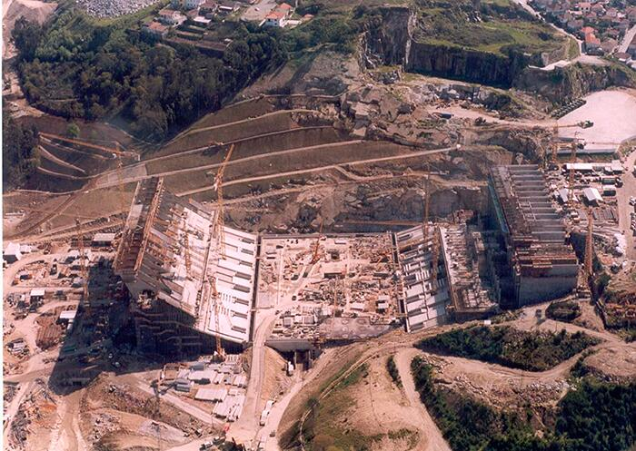
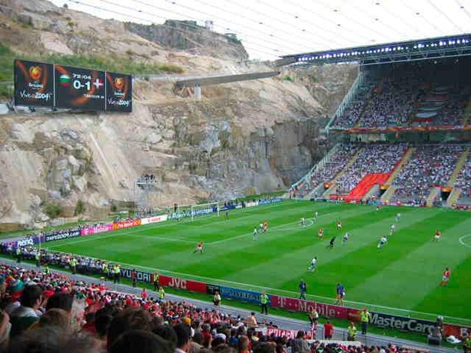
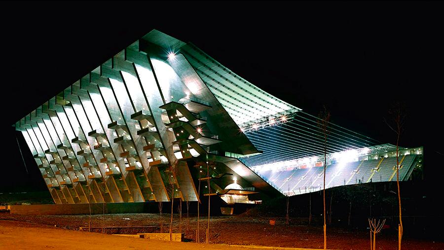
A Braga la sezione non descrive: istituisce l’architettura. Il progetto prende corpo come un taglio nella roccia del Monte do Castro: una tribuna incastonata nel fronte di cava e, di fronte, una gradonata artificiale; tra i due poli, il vuoto del campo. La montagna è parete, diaframma acustico, limite e paesaggio insieme; l’opera nasce per sottrazione, facendo della topografia la sua prima struttura.
Solo la sezione restituisce la logica di questo dispositivo: il contrasto fra il pieno geologico e l’arena scavata; l’orizzontalità sospesa della copertura, una rete di cavi ancorata a due grandi piedritti–torri e alle masse rocciose, che lascia liberi i lati corti e apre la vista sulla cava. La luce radente scorre sulle superfici di granito segate, rivelando la stratigrafia del sito, mentre il calcestruzzo regolare delle scale e dei diaframmi introduce una misura artificiale, misurata ma mai dominante.
Il percorso degli spettatori avviene in sezione: rampe e gallerie ipostile scorrono nel ventre della montagna, affiorando a quote diverse; la roccia guida, orienta, comprime e rilascia. Anche il bilancio materico è sezione: la massa estratta viene riutilizzata nel complesso, trasformando lo scavo in economia costruttiva e in scelta ambientale.
Per la didattica, Braga è un caso paradigmatico: la sezione come principio generativo che chiarisce struttura, percezione e paesaggio. Qui il progetto non aggiunge un oggetto al territorio: ne organizza le tensioni, convertendo un atto geologico in architettura necessaria.